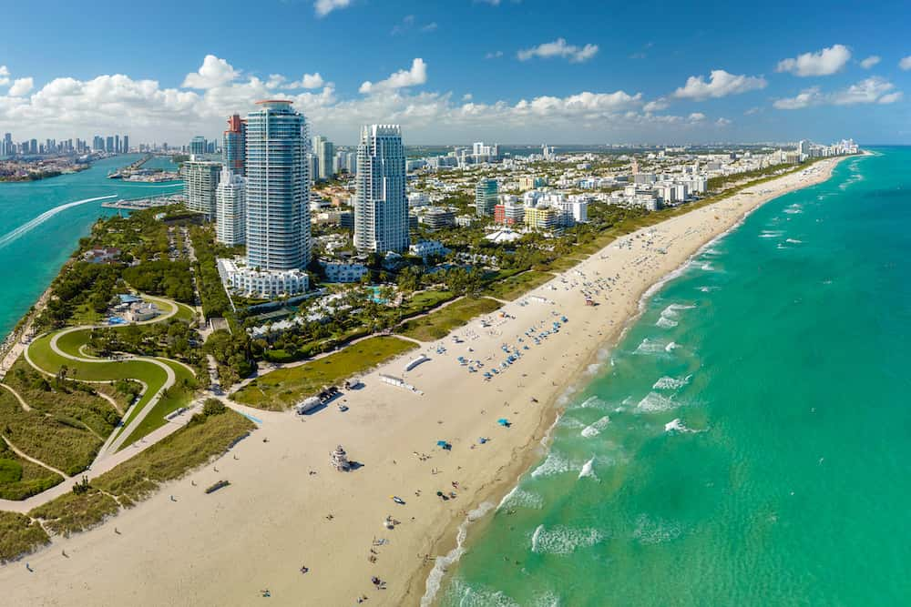
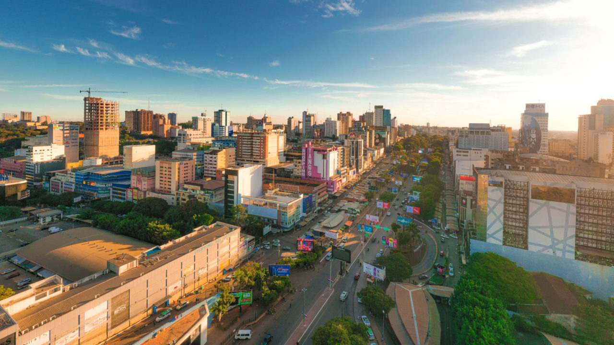
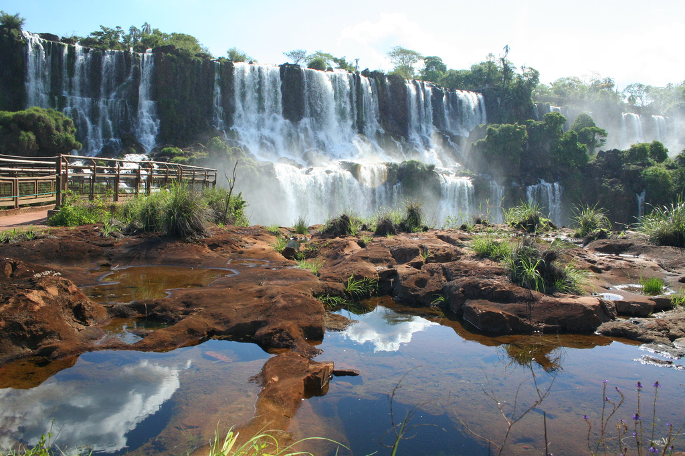

Lugares que já visitei:
- Estados Unidos: Miami é uma cidade vibrante e ensolarada no sul da Flórida, famosa pelas praias de águas claras, forte influência latina, vida noturna agitada e por ser um grande polo de compras

Para mais informações, podem acessar este link: Mais sobre os Estados Unidos.
- Bolívia: Bolívia é um país sul-americano sem saída para o mar, famoso por sua forte herança indígena, paisagens extremas nos Andes e por ser um dos destinos mais econômicos da região

Para mais informações, podem acessar este link: Mais sobre a Bolívia.
- Paraguai: O Paraguai é um país vizinho e acolhedor, famoso pelo custo de vida acessível, forte cultura bilíngue (espanhol e guarani) e grande polo de compras em Ciudad del Este.

Para mais informações, podem acessar este link: Mais sobre o Paraguai.
- Argentina: A Argentina é o segundo maior país da América do Sul. Famosa pela forte influência europeia na cultura e arquitetura, o país tem cerca de 46 milhões de habitantes, fala espanhol e possui uma culinária muito rica em carnes e vinhos.

Paraguai e Argentina eu conheci na região da Tríplice Fronteira, junto com o Brasil.
Para mais informações, podem acessar este link: Mais sobre a Tríplice Fronteira.